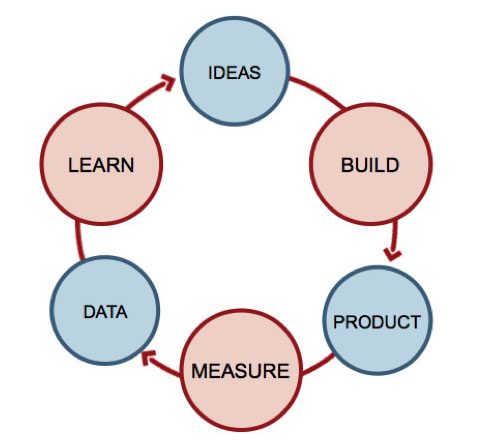
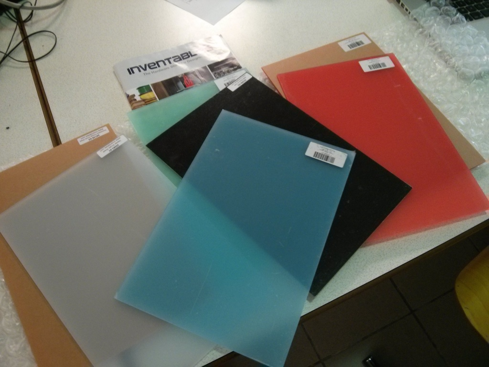
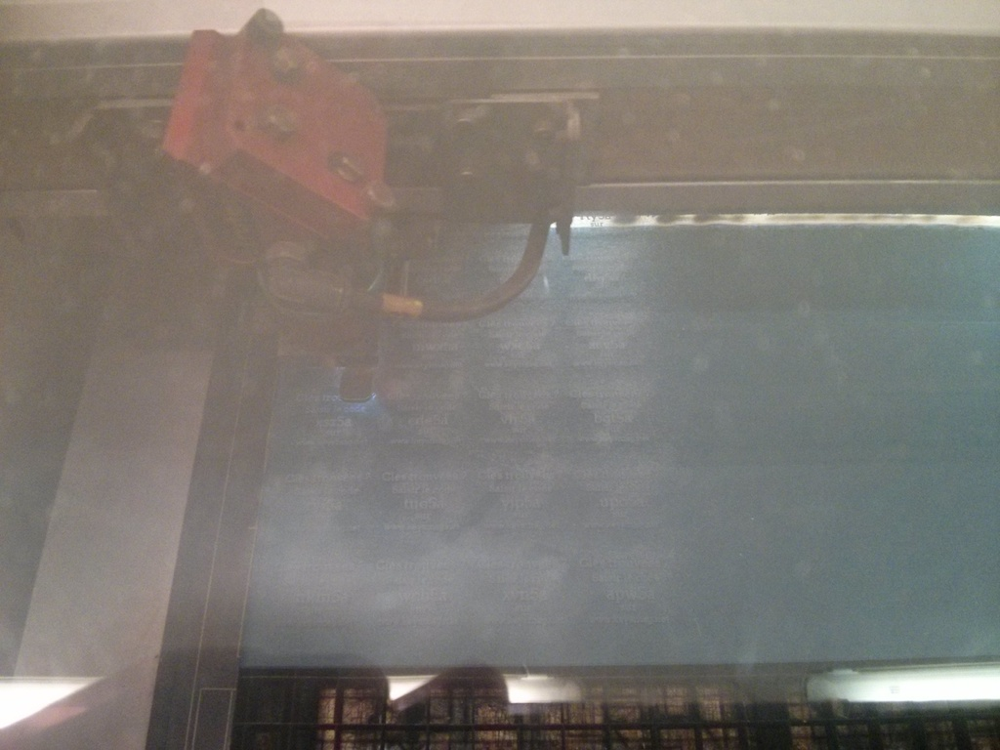
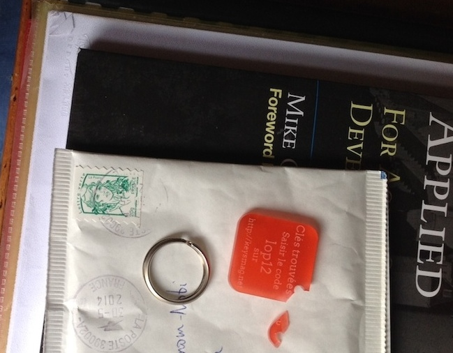

Une recette du Maker-Entrepreneur
Une grosse louche de Lean Startup avec une pincée de Fablab
@ndeverge
- Lean Startuper et programmeur @ekito
- Micro-entrepreneur
Le problème
Retrouver ses clés quand on les a perdues dans la rue.
Trop bonne idée !!
Présentation rapide du Lean Startup
Le Lean Startup en une image
Pour bien démarrer, le Lean Canvas !
Mes hypothèses de départ
- Le problème
Perdre ses clés dans la rue
- La solution
Un porte clé avec un code pour contacter le propriétaire des clés
- Le segment client
Ça doit pouvoir intéresser tout le monde
- Le canal pour atteindre des clients
Adwords
Perdre ses clés dans la rue
Un porte clé avec un code pour contacter le propriétaire des clés
Ça doit pouvoir intéresser tout le monde
Adwords
1ère hypothèse à expérimenter : l'UVP
"Vos clés perdues reviennent chez vous."
Expérimentation
-
Semer des clés dans la rue avec un porte clés avec un code.
-
Mesure
-
Nombre de clés rapportées par rapport au nombre de clés perdues.
Build
Le premier MVP
-
Ouch !
-
(pas top)
-
Mais suffisant pour mener une expérimentation.
-
MVP basse fidélité
Sur 17 clés perdues dans la rue, combien me sont revenues ?

Nous avons un gagnant ?
12 / 17 = 70,5 %
-
Hypothèse validée !
2ème hypothèse à expérimenter : un segment client
Et si les gens qui trouvaient les clés devenaient des acheteurs ?
Build
-
Mailing aux personnes qui ont trouvés les clés pour les inviter à acheter un porte clés à 5€.
-
Mesure
-
Nombre de clicks sur le bouton "Acheter" / nombre d'envoi d'emails.
Sur 5 emails envoyés, combien d'achats ?
Nous avons un gagnant ?
0 / 5 = 0 %
-
Hypothèse invalidée :-(
Nouvel essai sur le segment client
Qui pourrait être intéressé ?
"Get out of the building"
Steve Blank
Allons chercher des gens qui ont perdu leurs clés pour les interviewer

Au final, peu de réponses.
Mais quand même 3 "problem / solution interviews" par téléphone
Ce que j'ai appris
-
Pas de recherche active de solutions pour ne plus perdre ses clés.
-
Ça intéresse les parents qui confient leurs clés à leurs enfants.
-
Le porte clés doit être joli.
Un truc joli ??!!
Recherche sur Internet d'un porte clés personnalisable.
-
Au moins 200€ de budget et prix unitaire trop élevé.
Et enfin...
La révélation !
La découverte du Fablab et de la découpe laser
Formation gratuite à la découpe laser

Puis achat de plexi
Puis gravure et découpe
Et voilà !
Le prix
-
Méthode de Van Westendorp
- À quel prix considérez-vous que ce produit ne peut pas être de bonne qualité ?
- À quel prix considérez-vous que ce produit est vraiment une bonne affaire ?
- À quel prix considérez-vous que ce produit commence à être cher ? (pas hors de question, mais vous y réfléchissez avant de l'acheter)
- À quel prix considérez-vous que ce produit est tellement cher que vous ne réfléchiriez même pas à l'acheter ?
- Auprès d'une dizaine de personnes

Packaging et envoi
(pour récompenser mes interviewés)
De la casse :-(
Et il me reste toujours des clients à trouver !
-
A / B testing
Hypothèse
"Parents d'ado" vs "N'importe qui"
Build
-
Deux publicités ciblées sur Facebook
-
Mesure
-
Laquelle va le plus loin dans l'entonnoir pour le même budget (15€).
Deux publicités ciblées sur Facebook
Mesure
Laquelle va le plus loin dans l'entonnoir pour le même budget (15€).
"Parents d'ado" vs "N'importe qui"
Un pronostic ?
Entonnoirs
Conclusion globale
Ce que j'ai appris
-
Difficile de convaincre par Internet.
-
Encore et toujours tester le marché avant de réaliser le produit.
-
Mesures, mesures, mesures !!
-
Le Fablab tu fréquenteras.
-
Se faire plaisir.
Et pour Noël, pense à faire un cadeau original

https://keysmag.net
Présentation http://bit.ly/prez-at2014
Images Giphy.com
Concocté avec Bespoke.js